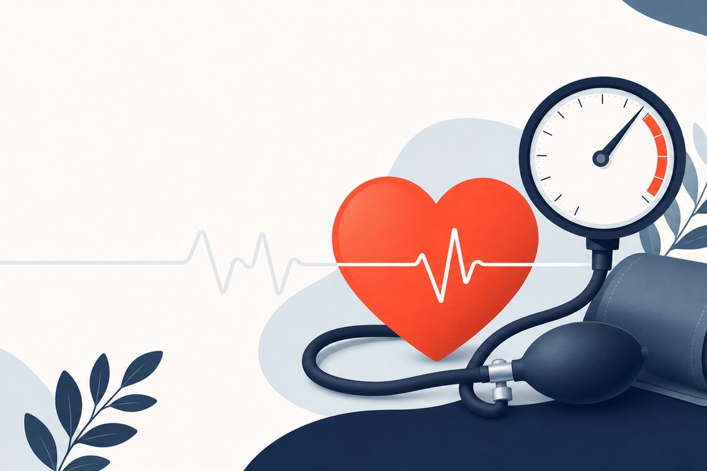

Key Takeaways
- Nearly 48% of U.S. adults have hypertension, yet only about 1 in 5 adults with hypertension (20.7%) have their blood pressure controlled to below 130/80 mmHg.[3]
- The 2025 AHA/ACC guideline keeps a blood pressure goal of <130/80 mmHg for most adults. For stage 1 hypertension with a lower 10-year PREVENT risk (below 7.5%), it supports starting medication if average blood pressure stays at or above 130/80 mmHg after 3 to 6 months of lifestyle changes.[1][21]
- Uncontrolled hypertension silently damages the heart, kidneys, brain, and eyes, most people feel perfectly fine until a catastrophic event occurs.
- Lifestyle changes work: in the DASH-Sodium trial, the DASH diet combined with lower sodium lowered systolic blood pressure by 5.3 to 20.8 mmHg, with the largest drops in people who started highest.[5]
- A blood pressure reading higher than 180/120 mmHg with symptoms such as chest pain, shortness of breath, back pain, numbness, weakness, vision change or difficulty speaking is a hypertensive emergency: call 911.[4]

Hypertension is often called the "silent killer," and I can tell you from years of clinical practice that the name is well-earned. Nearly half of all American adults, 47.7%, have high blood pressure.[3] The American Heart Association calls it the leading risk factor for stroke and a number of heart conditions.[4] Yet the most striking statistic isn't how many people have it. It's how few have it under control: only about one in five adults with hypertension (20.7%) have their blood pressure below 130/80 mmHg.[3]
The fundamental problem is that high blood pressure almost never makes you feel sick, until it does. Patients tell me all the time, "I feel fine, so why do I need this medication?" That question is exactly why I wrote this guide. Your blood pressure medication is not treating symptoms you can feel. It is preventing a heart attack, stroke, kidney failure, or vision loss that you will not see coming. Understanding why your medication matters, and why filling that prescription on time every month is one of the most important things you can do for your health, is the goal of everything that follows.
This guide is for patients who already have a hypertension diagnosis and are managing it with medication. My aim is to give you the same level of detail I would provide a family member: the science behind your numbers, what your medications actually do, when a routine refill is enough versus when you need to call your doctor, and the lifestyle changes that genuinely make a difference.
Understanding Your Blood Pressure Numbers
A blood pressure reading consists of two numbers: systolic (the top number) and diastolic (the bottom number). Systolic pressure measures the force against artery walls when the heart contracts and pumps blood. Diastolic pressure measures the force when the heart relaxes between beats. Both numbers matter, though systolic blood pressure becomes increasingly important as we age.
| Blood Pressure Category | Systolic (mmHg) | Diastolic (mmHg) | |
|---|---|---|---|
| Normal | Less than 120 | and | Less than 80 |
| Elevated | 120-129 | and | Less than 80 |
| Stage 1 Hypertension | 130-139 | or | 80-89 |
| Stage 2 Hypertension | 140 or higher | or | 90 or higher |
| Severe Hypertension | Higher than 180 | and/or | Higher than 120 |
These are the categories the American Heart Association lists for the 2025 guideline.[4] The 2025 guideline defines hypertension as 130/80 mmHg or higher, as the 2017 guideline did.[21] When the 2017 guideline moved the definition to 130 mmHg systolic, SPRINT and other clinical research informed that change; SPRINT found that a lower systolic target reduced cardiovascular events and deaths.[2]
The White Coat Effect
If your blood pressure seems higher at the doctor's office than at home, you're not imagining it. White coat hypertension, elevated readings in a clinical setting with normal readings at home or on ambulatory monitoring, is found in 15% to 30% of patients whose office blood pressure is in the hypertensive range.[9][6] That is why I encourage all my hypertension patients to monitor at home with a validated upper-arm cuff. Trends over weeks and months are far more valuable than any single reading taken under the stress of a medical visit.
Why Hypertension Matters: The Silent Damage
High blood pressure doesn't announce itself with obvious symptoms. Instead, it works silently over months and years, damaging your vascular system in ways that become catastrophic once they cross a threshold. Here's what happens to specific organs when blood pressure stays elevated:
- Heart: Chronic high pressure forces the heart to work harder, causing the left ventricle to thicken (left ventricular hypertrophy). This leads to heart failure, coronary artery disease, and arrhythmias. In a meta-analysis of 123 trials, every 10 mmHg reduction in systolic blood pressure lowered the risk of heart failure by 28% and of coronary heart disease by 17%.[14]
- Brain: High blood pressure is the leading risk factor for stroke.[4] In the same meta-analysis, a 10 mmHg reduction in systolic blood pressure lowered stroke risk by 27%.[14] The SPRINT-MIND follow-up study found that the lower systolic target reduced the risk of developing mild cognitive impairment.[2]
- Kidneys: Elevated pressure damages the delicate filtering units (glomeruli) of the kidneys, leading to chronic kidney disease, which then worsens hypertension in a destructive cycle. Hypertensive kidney disease remains the second most common cause of incident kidney failure.[21]
- Eyes: Hypertensive retinopathy, damage to the blood vessels of the retina, can progress from mild vessel narrowing to hemorrhage and vision loss. A comprehensive eye exam can sometimes reveal hypertensive damage before other organs show symptoms.
The critical takeaway: by the time you experience symptoms from hypertension, organ damage has likely been accumulating for years. Medication and lifestyle changes are not treating a feeling, they are preventing a future event.
Latest Guidelines: What's Changed in 2025
The 2025 AHA/ACC High Blood Pressure Guideline, written by the AHA and ACC with 11 other professional organizations, retires and replaces the 2017 guideline.[8][1] Here's what patients should know:
Target reaffirmed: The blood pressure goal is <130/80 mmHg for most adults, with encouragement to reach a systolic pressure <120 mmHg for those with elevated cardiovascular risk.[1] The ESPRIT trial found that, in hypertensive patients at high cardiovascular risk, targeting systolic <120 mmHg rather than <140 mmHg prevented major vascular events regardless of diabetes or prior stroke, with minor excess risk.[13]
New risk calculator: The guideline uses the AHA PREVENT equations to estimate 10-year cardiovascular disease risk when deciding on medication.[1][18]
Who starts medication: Medication is recommended for adults with average blood pressure of 140/90 mmHg or higher, and for adults at 130/80 mmHg or higher who have clinical cardiovascular disease, chronic kidney disease, diabetes, or a 10-year PREVENT risk of 7.5% or more. For stage 1 hypertension (130-139/80-89 mmHg) with a 10-year PREVENT risk below 7.5%, the guideline supports starting medication if average blood pressure remains at or above 130/80 mmHg after 3 to 6 months of lifestyle changes.[1][21]
Terminology: The American Heart Association's chart for the 2025 guideline labels readings higher than 180/120 mmHg without symptoms "severe hypertension" (call your health care professional) and the same readings with symptoms a "hypertensive emergency" (call 911).[4]
The SPRINT Trial's Lasting Impact
The Systolic Blood Pressure Intervention Trial (SPRINT) remains the landmark study that reshaped modern hypertension management. Conducted across 102 sites with 9,361 adults age 50 or older, SPRINT demonstrated that targeting a systolic blood pressure of less than 120 mmHg, compared to the standard less than 140 mmHg, reduced cardiovascular events by 25% and the overall risk of death by 27%.[2] The SPRINT-MIND follow-up further showed reduced risk of mild cognitive impairment with the lower target. SPRINT and other clinical research informed the 2017 ACC/AHA guideline that defined high blood pressure as 130 mmHg systolic or higher.[2]
Common Hypertension Medications Explained
If you've been prescribed a blood pressure medication, understanding how it works can help you recognize side effects, appreciate why adherence matters, and have more productive conversations with your doctor. The 2025 guideline names thiazide-type diuretics, long-acting dihydropyridine calcium channel blockers, ACE inhibitors and ARBs as first-line medications.[1] Here are those classes, plus beta-blockers:
| Medication Class | How It Works | Common Examples | Typical Side Effects |
|---|---|---|---|
| ACE Inhibitors | Block the enzyme that produces angiotensin II, a hormone that constricts blood vessels. Result: vessels relax, blood pressure drops, and the heart's workload decreases. | Lisinopril, enalapril, ramipril | Dry cough, elevated potassium, rare angioedema. Should not be used during pregnancy or when planning pregnancy.[1] |
| ARBs (Angiotensin Receptor Blockers) | Block the receptor where angiotensin II acts, producing similar blood pressure lowering as ACE inhibitors but through a different mechanism. | Losartan, valsartan, olmesartan | Generally well-tolerated. Much lower cough risk than ACE inhibitors. Elevated potassium possible. Should not be used during pregnancy or when planning pregnancy.[1] |
| Calcium Channel Blockers (CCBs) | Prevent calcium from entering heart and blood vessel muscle cells, causing vessels to relax and widen. Some also slow heart rate. | Amlodipine, nifedipine (dihydropyridines); diltiazem, verapamil (non-dihydropyridines) | Ankle swelling (especially amlodipine), flushing, headache, constipation (verapamil). Generally well-tolerated long-term. |
| Thiazide Diuretics | Increase sodium and water excretion by the kidneys, reducing blood volume and thus blood pressure. Also relax blood vessel walls over time. | Hydrochlorothiazide (HCTZ), chlorthalidone, indapamide | Increased urination, low potassium, elevated uric acid (gout risk), mild blood sugar elevation. Take in the morning to avoid nighttime bathroom trips. |
| Beta-Blockers | Reduce heart rate and the force of heart contractions, lowering blood pressure and cardiac workload. Also block certain stress hormones. | Metoprolol, atenolol, carvedilol | Fatigue, cold hands/feet, weight gain, exercise intolerance. Do not stop abruptly, must be tapered. Often used when heart rate is also elevated or after a heart attack. |
Needing more than one medication is common and is not a failure of any single drug. For stage 2 hypertension and for some higher-risk patients with stage 1, the 2025 guideline recommends starting with medications from two different classes, ideally in a single-pill combination; for stage 1 hypertension close to goal, starting one first-line medication and adjusting from there is a reasonable approach.[1]
Decision Framework: Routine Refill, Talk to Your Doctor, or Seek Emergency Care
One of the most common sources of confusion for patients in clinical care is knowing when a blood pressure reading warrants action and what kind. The framework used in practice:
| Scenario | What to Do | Why |
|---|---|---|
| Blood pressure consistently <130/80 mmHg on current medication, no new symptoms, due for refill | Routine refill, continue current regimen | You're at goal. Keep doing what you're doing. Maintain regular follow-up schedule. |
| Blood pressure running 130-159/80-99 mmHg despite consistent medication use, or new/bothersome side effects | Schedule a visit with your doctor within 1-2 weeks | Medication adjustment may be needed, dose increase, adding a second agent, or switching classes. Side effects should be discussed, not endured silently. |
| Blood pressure 160-179/100-119 mmHg on multiple readings with no acute symptoms | Contact your doctor within 24-48 hours | Significant elevation needing prompt reassessment. May indicate medication nonadherence, a new interfering medication, or worsening of the condition. |
| Blood pressure ≥180/120 mmHg without symptoms (severe hypertension, formerly "hypertensive urgency") | Call your doctor's office or after-hours line immediately. Retake reading after 5 minutes of rest. | The American Heart Association's chart labels this severe hypertension and advises calling your health care professional when you have no symptoms.[4] Clinical judgment is essential. |
| Blood pressure ≥180/120 mmHg with symptoms (severe headache, chest pain, shortness of breath, vision changes, confusion, numbness) | Call 911 or go to the emergency department immediately | This represents a hypertensive emergency: call 911.[4] Hypertensive emergency involves acute target-organ damage and should be treated swiftly, usually with intravenous medication in a closely monitored setting.[7] |
The distinction between severe hypertension without symptoms and a hypertensive emergency with symptoms is one of the most important concepts in blood pressure management. A severely elevated number alone, while concerning, is managed very differently from the same number accompanied by chest pain, vision loss, or confusion.
Lifestyle Modifications That Actually Work
Every patient is told the same thing: lifestyle changes are not optional additions to your medication, they are foundational. The 2025 guideline recommends sodium reduction, a healthy eating pattern such as DASH, physical activity, weight loss of at least 5% for people with overweight or obesity, and avoiding alcohol.[21] Here is what the trials show:
- DASH diet: A diet rich in fruits, vegetables, and low-fat dairy, with reduced saturated and total fat. The original DASH trial showed a systolic reduction of 5.5 mmHg overall and 11.4 mmHg in participants with hypertension compared with a control diet.[15] When DASH was combined with low sodium in adults not taking blood pressure medication, those starting at a systolic pressure of 150 mmHg or higher saw a 20.8 mmHg reduction.[5]
- Sodium reduction: Aim for 2,300 mg/day or less, moving toward an ideal limit of less than 1,500 mg.[4] In the DASH-Sodium trial, on a typical American diet, cutting sodium from the high to the intermediate level lowered systolic pressure by 2.1 mmHg, and from the intermediate to the low level by a further 4.6 mmHg.[12] Over 70% of dietary sodium comes from packaged and prepared foods, not from salt added while cooking or eating.[19]
- Regular physical activity: WHO advises adults to get at least 150 to 300 minutes per week of moderate-intensity aerobic activity, plus muscle-strengthening activities on 2 or more days a week.[20]
- Weight loss: A meta-analysis of 25 randomized trials found that an average weight loss of 5.1 kg lowered blood pressure by 4.44/3.57 mmHg, or about 1 mmHg per kilogram lost.[17]
- Alcohol: The American Heart Association advises drinking less or no alcohol to lower or prevent high blood pressure.[4]
- Potassium intake: In people without chronic kidney disease, the 2025 guideline recommends moderate potassium supplementation, ideally from dietary sources, for a total of 3,500 to 5,000 mg per day; the expected systolic reduction in people with hypertension is about 6 mmHg.[1]
The PREMIER trial tested several changes at once in 810 adults with above-optimal blood pressure or stage 1 hypertension who were not taking medication. After subtracting the change in an advice-only group, systolic pressure fell by a net 3.7 mmHg with a program built on established recommendations and 4.3 mmHg when the DASH diet was added. Hypertension prevalence, 38% at baseline, was 12% at 6 months in the group that added DASH.[16]
Medication Adherence: Why People Stop, and How to Stay on Track
In the United States, among adults with hypertension, 51.2% report taking medication to lower blood pressure, and only 20.7% have it controlled to below 130/80 mmHg.[3] Effective drugs exist; the gap is in getting them started and taking them consistently.
Why People Stop Taking Their Medication
After years of asking patients this question, the answers cluster into predictable categories:
- "I feel fine without it." This is the most common and most dangerous reason. Hypertension is asymptomatic until it causes an event. Feeling well is the expected state while on medication, not evidence that you no longer need it.
- Side effects. Fatigue, frequent urination, dizziness, cough, or swelling can erode quality of life. Many patients silently stop medication rather than discuss alternatives with their doctor.
- Cost and access. Prescription affordability remains a significant barrier, particularly for patients on multiple medications.
- Forgetfulness. When you take a pill every day and nothing perceptibly happens, it's easy for the routine to slip.
- Complexity. Taking three or four different pills at different times of day is genuinely difficult to sustain.
Practical Strategies That Help
- Pair medication with an existing habit: Take your pill when you brush your teeth or have your morning coffee. Habit stacking is more reliable than willpower.
- Use a weekly pill organizer: A filled pill box lets you visually confirm whether you took today's dose.
- Set a phone alarm: A daily reminder at the same time eliminates the "did I take it?" question.
- Ask about combination pills: Many drug combinations are available in a single tablet (e.g., lisinopril-hydrochlorothiazide, amlodipine-valsartan), reducing pill burden.
- Discuss side effects honestly: There are dozens of antihypertensive options. If one medication causes problems, there is almost always an effective alternative that agrees with you better.
- Refill on a schedule: Set a recurring calendar reminder to refill your prescription 5-7 days before you run out. A gap in medication, even a few days, can cause blood pressure to rebound.
Red Flags: When to Seek Emergency Care
- Blood pressure higher than 180/120 mmHg with any of the following symptoms:[4]
- Severe headache, sudden, intense, and different from your usual headaches. May indicate hypertensive encephalopathy or intracranial hemorrhage.
- Vision changes, blurred vision, double vision, or sudden loss of vision in one or both eyes. Suggests retinal damage or stroke.
- Chest pain or tightness, may indicate myocardial ischemia, aortic dissection, or acute heart failure.
- Shortness of breath, especially when lying flat. Suggests pulmonary edema from acute heart failure.
- Confusion, difficulty speaking, or weakness on one side, these are stroke symptoms. Every minute matters.
- Nausea or vomiting with severely elevated blood pressure, suggests systemic illness or elevated intracranial pressure.
- Nosebleed that won't stop, while most nosebleeds are benign, persistent bleeding with very high blood pressure warrants evaluation.
- Back pain, which the American Heart Association lists among the symptoms that call for 911 at these readings.[4]
A hypertensive emergency is elevated blood pressure with signs of new or worsening target-organ damage, and it should be treated swiftly, usually with intravenous medication in a closely monitored setting.[7] The American Heart Association advises calling 911 for readings higher than 180/120 mmHg with symptoms.[4] This is why the symptoms listed above are never something to "wait and see" about.
In contrast, for severe hypertension without symptoms, the American Heart Association's advice is to call your health care professional.[4] An AHA scientific statement on hospital care notes that the balance of benefit and risk of treating high blood pressure without symptoms is less clear, and that observational studies have suggested potential harms from treating it in hospitalized patients.[7]
How to Take Your Blood Pressure at Home: Technique, Devices, and the Log
The 2025 AHA/ACC guideline recommends home blood pressure monitoring to confirm a suspected diagnosis of hypertension and to guide medication adjustments.[1] Two things drive that. First, office readings in routine practice show substantial variability, and blood pressure can differ considerably in and out of the office.[9][10] Second, home readings help diagnose white-coat and masked hypertension, so the treating clinician can adjust medication using data that reflects real life.[10]
The device that matters
Buy an upper-arm oscillometric monitor that has passed validation testing, with a cuff sized to your arm. The AHA scientific statement advises patients to use only validated upper-arm devices because many nonvalidated devices are inaccurate, and it raises strong reservations about wrist monitors unless upper-arm measurement is not feasible. A cuff that is too small will give an artificially high reading.[9][10]
How to actually measure it
The 2019 AHA scientific statement on measurement of blood pressure and the AMA's home measurement guide lay out the technique. The statement lists talking during the measurement and a wrongly sized cuff among the sources of measurement error.[9]
- Avoid caffeine, cigarettes and other stimulants for 30 minutes before the reading.[22]
- Empty your bladder, then rest for 5 minutes in position, in a quiet space.[22]
- Feet flat on the floor. Back supported. Arm positioned so the cuff is at heart level. Legs uncrossed.[22][9]
- No talking or other distractions during the measurement.[22]
- Cuff on the bare upper arm, above the elbow.[22][9]
- Take two or three readings, one minute apart, and record them.[22]
- Measure in the morning and again in the evening.[9]
The 7-day log that clinicians actually use
For a diagnostic evaluation, a 2008 AHA statement recommended 2 readings in the morning and 2 at night over a preferred period of 7 days (28 scheduled readings), and a minimum of 3 days (12 readings) has also been recommended. Readings on the first day are sometimes elevated, and some experts recommend discarding them.[9] Home and ambulatory thresholds are set to correspond to office levels such as 130/80 mmHg, so your clinician will compare your home average with the matching home threshold.[9][21] Use a printable log, a spreadsheet, a monitor with a companion app that exports CSV or PDF, or a paper notebook. Send the average, not screenshots of individual readings.
White Coat and Masked Hypertension: Why the Office Reading Can Mislead
The office reading is a snapshot; blood pressure varies over hours. Two named patterns capture the important mismatches between the clinic and the rest of life. USPSTF recommends obtaining blood pressure measurements outside the clinical setting for diagnostic confirmation before starting treatment, and the 2025 AHA/ACC guideline recommends home monitoring to confirm a suspected diagnosis.[11][1]
White coat hypertension
Elevated office readings with normal readings at home or on ambulatory monitoring. Among patients with office readings in the hypertensive range, prevalence is 15% to 30% when awake or 24-hour ambulatory readings define the out-of-office value.[9] A 2020 review put it at about one-third of untreated patients with elevated clinic readings, linked it to the development of sustained hypertension and target organ damage, and noted that its effect on cardiovascular outcomes is still debated.[6] The 2025 AHA/ACC guideline recommends out-of-office measurement to diagnose hypertension and to rule out white-coat or masked hypertension, unless office systolic pressure is 160 mmHg or higher or diastolic is 100 mmHg or higher.[21]
Masked hypertension
The reverse: normal office readings with elevated readings at home or on ambulatory monitoring. This is the more dangerous of the two because it is invisible on a routine clinic visit, and cohort studies and meta-analyses have linked it to a rate of cardiovascular events similar to sustained hypertension. It is present in about 15% to 30% of adults whose office blood pressure is in the normotensive range, and it is more common in people with diabetes, chronic kidney disease or obstructive sleep apnea.[9]
Ambulatory blood pressure monitoring: the reference standard
Ambulatory blood pressure monitoring (ABPM) is a 24-hour recording using a monitor worn on the arm. A common approach takes readings every 15 to 30 minutes while awake and every 30 minutes while asleep. The 2019 AHA statement calls ABPM the reference standard for out-of-office blood pressure, with home monitoring an alternative when ABPM is not available or tolerated. ABPM can identify white coat, masked and nocturnal hypertension and nondipping patterns that office readings cannot detect.[9]
The DASH Diet: What Actually Lowers Blood Pressure
DASH stands for Dietary Approaches to Stop Hypertension. The 2025 AHA/ACC guideline names DASH as an example of a healthy eating pattern.[21][4] The original DASH trial in 1997 showed a systolic reduction of 5.5 mmHg overall and 11.4 mmHg in adults with hypertension compared with a control diet over 8 weeks.[15] The 2001 DASH-Sodium trial, published in NEJM, found that DASH with a low sodium level, compared with a typical American diet with a high sodium level, led to a systolic pressure 7.1 mmHg lower in participants without hypertension and 11.5 mmHg lower in participants with hypertension.[12]
What the diet actually looks like on a plate
NHLBI's example targets for a 2,000-calorie-a-day diet:[23]
- Vegetables: 4 to 5 servings per day.
- Fruits: 4 to 5 servings per day.
- Grains: 6 to 8 servings per day.
- Low-fat or fat-free dairy: 2 to 3 servings per day.
- Meats, poultry, and fish: 6 or fewer servings per day.
- Nuts, seeds, dry beans, and peas: 4 to 5 servings per week.
- Fats and oils: 2 to 3 servings per day.
- Sweets: 5 or fewer servings per week.
Sodium is the multiplier
Americans eat on average about 3,400 mg of sodium per day, and over 70% of it comes from packaged and prepared foods.[19] The 2025 AHA/ACC guideline recommends reducing sodium below 2,300 mg per day, ideally below 1,500 mg per day.[21] In DASH-Sodium, sodium reduction and DASH each lowered blood pressure, with greater effects in combination than singly.[12] Practical shortcuts: cook at home more than you eat out; check the sodium line and serving size on nutrition labels (5% Daily Value or less per serving is considered low, 20% or more is high).[19]
Realistic expectations
In DASH-Sodium participants who were not taking blood pressure medication, the low-sodium DASH diet lowered systolic pressure, compared with the high-sodium control diet, by 7.5 mmHg in those starting at 130 to 139 mmHg and 9.7 mmHg in those starting at 140 to 149 mmHg.[5] Diet does not replace medication where the 2025 guideline calls for it: at 140/90 mmHg or higher, or at 130/80 mmHg or higher with cardiovascular disease, chronic kidney disease, diabetes, or a 10-year PREVENT risk of 7.5% or more.[1]
The PREVENT Calculator: How Your 10-Year Cardiovascular Risk Now Decides Medication
The 2025 AHA/ACC guideline bases the medication decision in stage 1 hypertension (130 to 139 / 80 to 89 mmHg) on blood pressure and cardiovascular risk, using PREVENT (Predicting Risk of Cardiovascular Disease Events). PREVENT estimates the risk of total cardiovascular disease and its components, atherosclerotic disease and heart failure.[1] The rule, as summarized in a 2025 article by the guideline's chair and colleagues, has two branches:[1]
- 10-year PREVENT risk of 7.5% or more (or clinical cardiovascular disease, chronic kidney disease, or diabetes): start medication now, together with lifestyle changes.[1][21]
- 10-year PREVENT risk below 7.5%: lifestyle changes first; start medication if average blood pressure remains at or above 130/80 mmHg after 3 to 6 months.[1][21]
What PREVENT does differently: the equations are sex-specific and race-free, and they include estimated glomerular filtration rate along with traditional risk factors, with optional urine albumin-to-creatinine ratio, hemoglobin A1c, and social deprivation index.[18] Practical read: a risk of 7.5% or more means medication now; a lower risk means a 3 to 6 month lifestyle window, after which medication is started if blood pressure is still at or above 130/80 mmHg. The 7.5% figure is not a second hurdle that a lower-risk patient must cross before treatment.[1]
You do not need to run PREVENT yourself; the calculator is publicly available and your clinician can run it.[1] The numbers that matter for the conversation are the 10-year risk value, the blood pressure category, and the goal (less than 130/80 mmHg for most adults).[1] If you have been told your blood pressure has been in the 130s over 80s and your PREVENT risk is below 7.5%, that is why you may have been asked to try lifestyle changes first.
Frequently Asked Questions
No. Normal readings usually mean your medication is working, not that your hypertension has resolved. Stopping medication without physician guidance almost always leads to blood pressure climbing back to pre-treatment levels, sometimes within days. If you feel your medication may no longer be necessary, discuss a supervised, gradual tapering plan with your doctor while monitoring your blood pressure closely at home. In rare cases, patients who have made significant lifestyle changes (substantial weight loss, dramatic dietary improvement) may be able to reduce their medication under careful supervision.
Take it as soon as you remember, unless it's close to the time for your next dose. In that case, skip the missed dose and resume your regular schedule. Never double up to make up for a missed dose. If you frequently forget doses, consider setting a daily phone alarm, using a pill organizer, or asking your doctor about longer-acting once-daily medications that are easier to remember.
Blood pressure is inherently dynamic, it fluctuates throughout the day based on activity, stress, caffeine intake, hydration, sleep quality, and even the time of day. And white coat hypertension (high readings in the clinic with normal readings at home or on ambulatory monitoring) is found in 15% to 30% of patients whose office readings are in the hypertensive range.[9] This is why home monitoring and trends over time are more informative than any single reading. When you check at home, sit quietly for 5 minutes, use a validated upper-arm cuff, and measure at the same time each day.
Yes. Physical activity is one of the lifestyle measures the 2025 AHA/ACC guideline recommends for lowering blood pressure.[21] WHO advises adults to get at least 150 to 300 minutes of moderate-intensity aerobic activity per week, plus muscle-strengthening activities on 2 or more days a week.[20] If your blood pressure is severely uncontrolled, talk with your physician before starting a new exercise program.
Some can. Beta-blockers are most commonly associated with fatigue and modest weight gain. Older-generation beta-blockers (like atenolol and metoprolol) tend to cause these side effects more than newer agents (like carvedilol and nebivolol). ACE inhibitors, ARBs, and calcium channel blockers generally do not cause weight gain. Thiazide diuretics may cause fatigue initially but this typically resolves within a few weeks. If side effects are affecting your quality of life, talk to your doctor, there are many medication options available, and switching classes often resolves the issue entirely.
For patients on stable antihypertensive medication, the recommendation is checking at least 2-3 times per week at consistent times, ideally morning and evening. When starting a new medication or adjusting doses, daily monitoring is appropriate for the first 2 weeks. Use a validated upper-arm cuff (not a wrist monitor), sit quietly for 5 minutes before measuring, and keep a written or digital log to share with your physician at follow-up visits. Consistent home readings provide a far more accurate picture of your blood pressure control than occasional office measurements.
References
- Cameron NA, Jones DW, Khan SS, Lloyd-Jones DM. Case-Based Applications of the 2025 AHA/ACC/Multispecialty High Blood Pressure Guideline. Hypertension. 2025;82(12):2055-2063. PMID: 41204807. PMC12617343. https://pmc.ncbi.nlm.nih.gov/articles/PMC12617343/
- National Heart, Lung, and Blood Institute (NHLBI). Systolic Blood Pressure Intervention Trial (SPRINT) Study. Accessed November 7, 2026. https://www.nhlbi.nih.gov/science/systolic-blood-pressure-intervention-trial-sprint-study
- Fryar CD, Kit B, Carroll MD, Afful J. Hypertension Prevalence, Awareness, Treatment, and Control Among Adults Age 18 and Older: United States, August 2021-August 2023. NCHS Data Brief No. 511. National Center for Health Statistics; October 2024. https://www.cdc.gov/nchs/products/databriefs/db511.htm
- American Heart Association. Top 10 Things to Know About the New AHA/ACC High Blood Pressure Guideline. Accessed November 7, 2026. https://www.heart.org/en/health-topics/high-blood-pressure/the-facts-about-high-blood-pressure/high-bp-top-10
- Juraschek SP, Miller ER, Weaver CM, Appel LJ. Effects of Sodium Reduction and the DASH Diet in Relation to Baseline Blood Pressure. Journal of the American College of Cardiology. 2017;70(23):2841-2848. PMID: 29141784. https://pmc.ncbi.nlm.nih.gov/articles/PMC5742671/
- Nuredini G, Saunders A, Rajkumar C, Okorie M. Current status of white coat hypertension: where are we? Therapeutic Advances in Cardiovascular Disease. 2020;14:1753944720931637. PMID: 32580646. https://pmc.ncbi.nlm.nih.gov/articles/PMC7318827/
- Bress AP, Anderson TS, Flack JM, et al; American Heart Association. The Management of Elevated Blood Pressure in the Acute Care Setting: A Scientific Statement From the American Heart Association. Hypertension. 2024;81(8):e94-e106. PMID: 38804130. https://pubmed.ncbi.nlm.nih.gov/38804130/
- Jones DW, Ferdinand KC, Taler SJ, Johnson HM, et al. 2025 AHA/ACC/AANP/AAPA/ABC/ACCP/ACPM/AGS/AMA/ASPC/NMA/PCNA/SGIM Guideline for the Prevention, Detection, Evaluation and Management of High Blood Pressure in Adults: A Report of the American College of Cardiology/American Heart Association Joint Committee on Clinical Practice Guidelines. Circulation. 2025;152(11):e114-e218. PMID: 40811497. https://pubmed.ncbi.nlm.nih.gov/40811497/
- Muntner P, Shimbo D, Carey RM, et al. Measurement of Blood Pressure in Humans: A Scientific Statement From the American Heart Association. Hypertension. 2019 May;73(5):e35-e66. PMID: 30827125. PMC11409525. https://pmc.ncbi.nlm.nih.gov/articles/PMC11409525/
- Shimbo D, Artinian NT, Basile JN, et al; American Heart Association and American Medical Association. Self-Measured Blood Pressure Monitoring at Home: A Joint Policy Statement From the American Heart Association and American Medical Association. Circulation. 2020 Jul 28;142(4):e42-e63. PMID: 32567342. https://pubmed.ncbi.nlm.nih.gov/32567342/
- US Preventive Services Task Force, Krist AH, Davidson KW, et al. Screening for Hypertension in Adults: US Preventive Services Task Force Reaffirmation Recommendation Statement. JAMA. 2021 Apr 27;325(16):1650-1656. PMID: 33904861. https://pubmed.ncbi.nlm.nih.gov/33904861/
- Sacks FM, Svetkey LP, Vollmer WM, Appel LJ, et al; DASH-Sodium Collaborative Research Group. Effects on blood pressure of reduced dietary sodium and the Dietary Approaches to Stop Hypertension (DASH) diet. N Engl J Med. 2001 Jan 4;344(1):3-10. PMID: 11136953. https://pubmed.ncbi.nlm.nih.gov/11136953/
- Liu J, Li Y, Ge J, et al; ESPRIT Collaborative Group. Lowering systolic blood pressure to less than 120 mm Hg versus less than 140 mm Hg in patients with high cardiovascular risk with and without diabetes or previous stroke: an open-label, blinded-outcome, randomised trial. Lancet. 2024 Jul 20;404(10449):245-255. PMID: 38945140. https://pubmed.ncbi.nlm.nih.gov/38945140/
- Ettehad D, Emdin CA, Kiran A, et al. Blood pressure lowering for prevention of cardiovascular disease and death: a systematic review and meta-analysis. Lancet. 2016;387(10022):957-967. PMID: 26724178. https://pubmed.ncbi.nlm.nih.gov/26724178/
- Appel LJ, Moore TJ, Obarzanek E, et al; DASH Collaborative Research Group. A clinical trial of the effects of dietary patterns on blood pressure. N Engl J Med. 1997 Apr 17;336(16):1117-1124. PMID: 9099655. https://pubmed.ncbi.nlm.nih.gov/9099655/
- Appel LJ, Champagne CM, Harsha DW, et al. Effects of comprehensive lifestyle modification on blood pressure control: main results of the PREMIER clinical trial. JAMA. 2003;289(16):2083-2093. PMID: 12709466. https://pubmed.ncbi.nlm.nih.gov/12709466/
- Neter JE, Stam BE, Kok FJ, Grobbee DE, Geleijnse JM. Influence of weight reduction on blood pressure: a meta-analysis of randomized controlled trials. Hypertension. 2003;42(5):878-884. PMID: 12975389. https://pubmed.ncbi.nlm.nih.gov/12975389/
- Khan SS, Matsushita K, Sang Y, et al. Development and Validation of the American Heart Association's PREVENT Equations. Circulation. 2024;149(6):430-449. PMID: 37947085. PMC10910659. https://pmc.ncbi.nlm.nih.gov/articles/PMC10910659/
- US Food and Drug Administration. Sodium in Your Diet. Content current as of March 5, 2024. Accessed November 7, 2026. https://www.fda.gov/food/nutrition-education-resources-materials/sodium-your-diet
- World Health Organization Regional Office for Europe. Physical activity (fact sheet). September 1, 2021. Accessed November 7, 2026. https://www.who.int/europe/news-room/fact-sheets/item/physical-activity
- Kanbay M, Copur S, Sarafidis P, Ferro CJ, Ortiz A. 2025 AHA/ACC/AANP/AAPA/ABC/ACCP/ACPM/AGS/AMA/ASPC/NMA/PCNA/SGIM guideline for the prevention, detection, evaluation and management of high blood pressure in adults: a commentary from the European Renal Best Practice (ERBP). Nephrol Dial Transplant. 2026;41(10):1909-1918. PMID: 41805831. PMC13624793. https://pmc.ncbi.nlm.nih.gov/articles/PMC13624793/
- American Medical Association. How to Measure Your Blood Pressure at Home (patient handout). 2020. Accessed November 7, 2026. https://cpr.heart.org/-/media/Files/Health-Topics/High-Blood-Pressure/measuringbpathome.pdf
- National Heart, Lung, and Blood Institute (NHLBI). DASH Eating Plan. Last updated February 25, 2026. Accessed November 7, 2026. https://www.nhlbi.nih.gov/education/dash-eating-plan